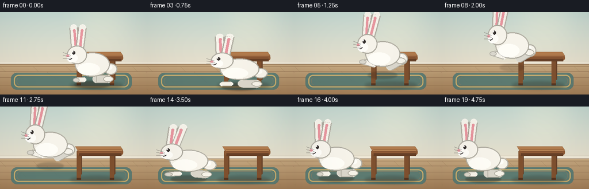
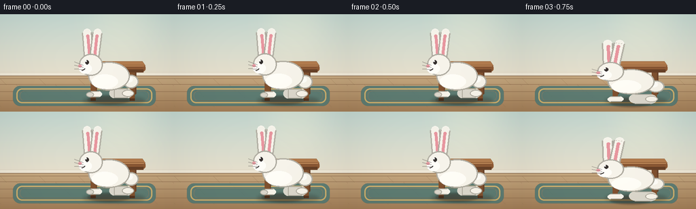

CODING AGENTS AS PIXEL WORLD MODELS
traex/Seed-2.1-Pro-0915 · dynamic_spatial_relationship_0019
点击播放 · 原生 RGB 像素
逐轮保存的候选
回放视频、检查图与代码变化。
每份候选均可单独播放。实际图片检查记录在下方工具轨迹中。
候选 01播放与检查图
点击播放 · 原生 RGB 像素


展开代码变化
--- 上一保存版本
+++ 本次保存版本
@@ -0,0 +1,327 @@
+"""Generate the five-second RGB animation described in prompt.txt."""
+
+from pathlib import Path
+import math
+
+import numpy as np
+from PIL import Image, ImageDraw, ImageFilter
+
+import artifact_io
+
+
+W, H = 256, 144
+N_FRAMES, FPS = 20, 4.0
+S = 4
+CASE_DIR = Path(__file__).parent
+
+
+def rgba(color, alpha=255):
+ return (*color, alpha)
+
+
+def capsule(draw, p0, p1, width, fill, outline=None, outline_width=0):
+ """Draw a rounded line segment in high-resolution coordinates."""
+ x0, y0 = p0
+ x1, y1 = p1
+ r = width / 2
+ draw.ellipse((x0 - r, y0 - r, x0 + r, y0 + r), fill=fill)
+ draw.ellipse((x1 - r, y1 - r, x1 + r, y1 + r), fill=fill)
+ if x0 == x1:
+ box = (x0 - r, min(y0, y1), x1 + r, max(y0, y1))
+ elif y0 == y1:
+ box = (min(x0, x1), y0 - r, max(x0, x1), y1 + r)
+ else:
+ angle = math.degrees(math.atan2(y1 - y0, x1 - x0))
+ length = math.hypot(x1 - x0, y1 - y0)
+ box = (
+ min(x0, x1) - width,
+ min(y0, y1) - width,
+ max(x0, x1) + width,
+ max(y0, y1) + width,
+ )
+ # PIL lines cover non-axis-aligned capsules; the round end caps above
+ # keep their shoulders soft.
+ draw.line((x0, y0, x1, y1), fill=fill, width=width)
+ if outline and outline_width:
+ draw.line((x0, y0, x1, y1), fill=outline, width=width + outline_width * 2)
+ draw.line((x0, y0, x1, y1), fill=fill, width=width)
+ return
+ draw.rectangle(box, fill=fill)
+ if outline and outline_width:
+ draw.rectangle(box, outline=outline, width=outline_width)
+
+
+def ellipse(draw, center, radii, fill, outline=None, width=0):
+ cx, cy = center
+ rx, ry = radii
+ draw.ellipse((cx - rx, cy - ry, cx + rx, cy + ry), fill=fill, outline=outline, width=width)
+
+
+def build_room():
+ """Build a static room and table at 4x output resolution."""
+ ww, hh = W * S, H * S
+ img = Image.new("RGB", (ww, hh))
+ px = img.load()
+
+ wall_top = np.array((196, 216, 209), dtype=np.float32)
+ wall_bottom = np.array((231, 224, 205), dtype=np.float32)
+ floor_top = np.array((198, 169, 129), dtype=np.float32)
+ floor_bottom = np.array((159, 124, 88), dtype=np.float32)
+ horizon = int(89 * S)
+
+ for y in range(hh):
+ if y < horizon:
+ t = y / horizon
+ color = tuple((wall_top * (1 - t) + wall_bottom * t).astype(np.uint8))
+ else:
+ t = (y - horizon) / (hh - horizon)
+ color = tuple((floor_top * (1 - t) + floor_bottom * t).astype(np.uint8))
+ for x in range(ww):
+ px[x, y] = color
+
+ draw = ImageDraw.Draw(img)
+
+ # Soft window light, kept away from the action so it reads as room lighting.
+ glow = Image.new("L", (ww, hh), 0)
+ gd = ImageDraw.Draw(glow)
+ gd.ellipse((700 * S // 4 - 150, -120, 700 * S // 4 + 190, 250), fill=58)
+ glow = glow.filter(ImageFilter.GaussianBlur(70))
+ img.paste((255, 248, 219), (0, 0), glow)
+ draw = ImageDraw.Draw(img)
+
+ # Baseboard and a crisp room corner line.
+ draw.rectangle((0, horizon - 13, ww, horizon + 8), fill=(238, 231, 214))
+ draw.line((0, horizon - 13, ww, horizon - 13), fill=(213, 204, 184), width=2)
+ draw.line((0, horizon + 8, ww, horizon + 8), fill=(130, 101, 75), width=3)
+
+ # Wooden floorboards.
+ for i, y in enumerate((horizon + 24, horizon + 58, horizon + 101, horizon + 154)):
+ draw.line((0, y, ww, y), fill=(133, 101, 72), width=2)
+ offset = (i * 137) % 190
+ for x in range(-offset, ww, 230):
+ draw.line((x, y, x + 38, y + 38), fill=(143, 111, 80), width=1)
+
+ # Broad muted rug.
+ rug = Image.new("RGBA", (ww, hh), (0, 0, 0, 0))
+ rd = ImageDraw.Draw(rug)
+ rd.rounded_rectangle((76, 424, 916, 542), radius=42, fill=(77, 119, 116, 218))
+ rd.rounded_rectangle((96, 438, 896, 526), radius=34, outline=(213, 184, 111, 190), width=8)
+ rd.rounded_rectangle((116, 452, 876, 512), radius=28, outline=(67, 101, 100, 110), width=3)
+ rug = rug.filter(ImageFilter.GaussianBlur(0.4))
+ img.alpha_composite(rug) if img.mode == "RGBA" else img.paste(Image.alpha_composite(Image.new("RGBA", img.size, (0, 0, 0, 0)), rug).convert("RGB"), (0, 0), rug)
+ draw = ImageDraw.Draw(img)
+
+ # Table geometry. Its front edge starts at x=134 in output coordinates.
+ table_shadow = Image.new("RGBA", (ww, hh), (0, 0, 0, 0))
+ td = ImageDraw.Draw(table_shadow)
+ td.ellipse((488, 486, 852, 538), fill=(49, 38, 29, 70))
+ table_shadow = table_shadow.filter(ImageFilter.GaussianBlur(10))
+ img.paste(Image.new("RGB", img.size), (0, 0), Image.new("L", img.size, 0))
+ base = img.convert("RGBA")
+ base.alpha_composite(table_shadow)
+ img = base.convert("RGB")
+ draw = ImageDraw.Draw(img)
+
+ # Rear and front legs.
+ for x, color in ((560, (105, 67, 42)), (792, (105, 67, 42))):
+ draw.rounded_rectangle((x - 10, 312, x + 10, 474), radius=6, fill=color)
+ for x, color in ((548, (126, 80, 47)), (778, (126, 80, 47))):
+ draw.rounded_rectangle((x - 15, 306, x + 15, 512), radius=8, fill=color)
+ draw.rectangle((x - 15, 498, x + 15, 512), fill=(82, 51, 32))
+
+ # Three-quarter table top.
+ draw.polygon(
+ [(522, 278), (838, 278), (856, 304), (538, 304)],
+ fill=(178, 124, 78),
+ outline=(126, 82, 51),
+ )
+ draw.rounded_rectangle((538, 300, 856, 338), radius=15, fill=(143, 91, 54))
+ draw.rectangle((550, 326, 844, 344), fill=(103, 64, 39))
+ draw.line((545, 305, 847, 305), fill=(205, 153, 101), width=4)
+ draw.line((555, 315, 838, 315), fill=(116, 72, 43), width=2)
+
+ return img
+
+
+def draw_rabbit(pose, ear_lag, breath=0.0):
+ """Draw a left-facing rabbit in output-pixel coordinates."""
+ sprite = Image.new("RGBA", (260, 230), (0, 0, 0, 0))
+ d = ImageDraw.Draw(sprite)
+ o = np.array([130, 190], dtype=np.float32)
+
+ fur = (247, 244, 235, 255)
+ fur_shadow = (218, 215, 205, 255)
+ fur_outline = (174, 171, 160, 255)
+ pink = (232, 151, 160, 255)
+ dark = (54, 49, 47, 255)
+
+ def P(x, y):
+ return tuple(o + np.array((x, y), dtype=np.float32))
+
+ # Tail, drawn first so the body overlaps its base.
+ ellipse(d, P(52, -18), (18, 16), fur, fur_outline, 3)
+ ellipse(d, P(48, -23), (8, 7), (255, 254, 249, 255))
+
+ if pose == "jump":
+ # Hind legs trail backward; forepaws reach toward the landing.
+ capsule(d, P(20, 2), P(49, -13), 20, fur_shadow, fur_outline, 2)
+ ellipse(d, P(50, -13), (14, 8), fur, fur_outline, 2)
+ capsule(d, P(-24, -2), P(-53, -10), 12, fur, fur_outline, 2)
+ ellipse(d, P(-56, -10), (10, 6), fur_shadow, fur_outline, 2)
+ elif pose == "land":
+ capsule(d, P(16, 8), P(43, 11), 22, fur_shadow, fur_outline, 2)
+ ellipse(d, P(45, 11), (13, 8), fur, fur_outline, 2)
+ capsule(d, P(-24, 9), P(-49, 11), 12, fur, fur_outline, 2)
+ ellipse(d, P(-51, 11), (10, 6), fur_shadow, fur_outline, 2)
+ elif pose == "crouch":
+ capsule(d, P(8, 15), P(42, 16), 24, fur_shadow, fur_outline, 2)
+ ellipse(d, P(43, 16), (13, 8), fur, fur_outline, 2)
+ capsule(d, P(-22, 16), P(-43, 17), 12, fur, fur_outline, 2)
+ else:
+ capsule(d, P(12, 10), P(44, 10), 22, fur_shadow, fur_outline, 2)
+ ellipse(d, P(45, 10), (14, 8), fur, fur_outline, 2)
+ capsule(d, P(-23, 12), P(-43, 13), 12, fur, fur_outline, 2)
+ ellipse(d, P(-45, 13), (9, 6), fur_shadow, fur_outline, 2)
+
+ # Long ears, with their tips trailing slightly during acceleration.
+ for base_x, lean, outer_lean in ((-47, -5, 0), (-35, 8, 0)):
+ lean += ear_lag
+ root = P(base_x, -72)
+ tip = P(base_x + lean, -135)
+ capsule(d, root, tip, 18, fur, fur_outline, 3)
+ inner_root = P(base_x + 1, -78)
+ inner_tip = P(base_x + lean * 0.72 + 1, -126)
+ capsule(d, inner_root, inner_tip, 7, pink)
+
+ # Body and belly.
+ body_tilt = -7 if pose == "jump" else (-2 if pose == "land" else 0)
+ body_center = P(-2 * math.sin(math.radians(body_tilt)), -31 + breath)
+ ellipse(d, body_center, (49, 34), fur, fur_outline, 3)
+ ellipse(d, P(-10, -18 + breath), (31, 17), (255, 254, 248, 255))
+
+ # Head, cheek, face details.
+ head = P(-43, -58 + breath * 0.5)
+ ellipse(d, head, (28, 26), fur, fur_outline, 3)
+ ellipse(d, P(-56, -49 + breath * 0.5), (15, 12), (255, 254, 249, 255))
+ ellipse(d, P(-52, -64 + breath * 0.5), (4, 5), dark)
+ ellipse(d, P(-54, -66 + breath * 0.5), (1.2, 1.4), (255, 255, 255, 255))
+ ellipse(d, P(-69, -55 + breath * 0.5), (4, 3), pink)
+ mouth_cx, mouth_cy = P(-66, -52)
+ d.arc((mouth_cx - 10, mouth_cy - 8, mouth_cx + 10, mouth_cy + 8), 20, 80, fill=dark, width=2)
+ for dy in (-4, 1, 6):
+ d.line(
+ (P(-61, -53 + dy + breath * 0.5) + P(-82, -58 + dy * 1.7 + breath * 0.5)),
+ fill=(105, 100, 96, 180),
+ width=1,
+ )
+
+ return sprite
+
+
+def paste_rabbit(canvas, frame_index):
+ """Animate from directly in front of the table to its left."""
+ # Output-pixel coordinates, then multiplied by the supersample factor.
+ start_x, end_x = 160.0, 72.0
+ ground_y = 126.0
+
+ if frame_index <= 2:
+ t = 0.0
+ x = start_x
+ feet_y = ground_y + 0.7 * math.sin(frame_index * math.pi / 2)
+ pose = "rest"
+ sx, sy = 1.0, 1.0 + 0.012 * math.sin(frame_index * math.pi / 2)
+ ear_lag = 0
+ elif frame_index == 3:
+ t = 0.0
+ x = start_x
+ feet_y = ground_y + 4
+ pose = "crouch"
+ sx, sy = 1.13, 0.88
+ ear_lag = 3
+ elif frame_index <= 14:
+ t = (frame_index - 3) / 11.0
+ smooth = 0.5 - 0.5 * math.cos(math.pi * t)
+ x = start_x + (end_x - start_x) * smooth
+ feet_y = ground_y - 30 * math.sin(math.pi * t)
+ pose = "land" if frame_index >= 13 else "jump"
+ sx = 0.95 + 0.06 * abs(math.cos(math.pi * t))
+ sy = 1.10 - 0.05 * abs(math.cos(math.pi * t))
+ if frame_index >= 13:
+ sx, sy = 1.11, 0.91
+ ear_lag = 13 - 5 * math.sin(math.pi * t)
+ else:
+ t = 1.0
+ settle = (frame_index - 15) / 4.0
+ x = end_x + 1.2 * math.sin(settle * math.pi)
+ feet_y = ground_y - 1.5 * math.sin(settle * math.pi)
+ pose = "rest"
+ sx = 1.04 - 0.04 * settle
+ sy = 0.98 + 0.02 * settle
+ ear_lag = 4 * (1 - settle)
+
+ rabbit_scale = 0.62
+ shadow_layer = Image.new("RGBA", canvas.size, (0, 0, 0, 0))
+ sd = ImageDraw.Draw(shadow_layer)
+ airborne = max(0.0, ground_y - feet_y)
+ shadow_rx = 31 - airborne * 0.32
+ shadow_alpha = int(82 - airborne * 1.45)
+ sx_pos, sy_pos = x * S, feet_y * S
+ sd.ellipse(
+ (
+ sx_pos - shadow_rx * S,
+ sy_pos - 6 * S,
+ sx_pos + shadow_rx * S,
+ sy_pos + 7 * S,
+ ),
+ fill=(35, 29, 24, max(28, shadow_alpha)),
+ )
+ shadow_layer = shadow_layer.filter(ImageFilter.GaussianBlur(5))
+ canvas.alpha_composite(shadow_layer)
+
+ breath = -1.5 if frame_index <= 2 and frame_index == 1 else 0
+ sprite = draw_rabbit(pose, ear_lag, breath)
+ sprite = sprite.resize(
+ (
+ max(1, round(260 * sx * S * rabbit_scale)),
+ max(1, round(230 * sy * S * rabbit_scale)),
+ ),
+ Image.Resampling.BICUBIC,
+ )
+
+ # Anchor at the lowest rear paw, so squash and jump motion preserve contact.
+ anchor_x = 130 * sx * rabbit_scale
+ anchor_y = 215 * sy * rabbit_scale
+ paste_x = round(x * S - anchor_x * S)
+ paste_y = round(feet_y * S - anchor_y * S)
+ canvas.alpha_composite(sprite, (paste_x, paste_y))
+
+
+def add_finishing_grade(frame):
+ arr = np.asarray(frame.convert("RGB"), dtype=np.float32)
+ # Gentle vignette and a faint warm lift near the floor.
+ yy, xx = np.mgrid[0 : H * S, 0 : W * S]
+ vignette = (((xx - 512) / 650) ** 2 + ((yy - 270) / 430) ** 2)[..., None]
+ arr *= 1 - np.clip(vignette * 0.055, 0, 0.10)
+ warm = np.clip((yy - 330) / 260, 0, 1)[..., None]
+ arr[..., 0] += warm[..., 0] * 5
+ arr[..., 1] += warm[..., 0] * 3
+ return Image.fromarray(np.clip(arr, 0, 255).astype(np.uint8), "RGB")
+
+
+def main():
+ room = build_room().convert("RGBA")
+ frames = []
+ for i in range(N_FRAMES):
+ frame = room.copy()
+ paste_rabbit(frame, i)
+ frame = add_finishing_grade(frame)
+ frame = frame.resize((W, H), Image.Resampling.LANCZOS)
+ frames.append(np.asarray(frame, dtype=np.uint8))
+
+ frames = np.stack(frames)
+ artifact_io.save(frames, CASE_DIR)
+ print(f"Saved {len(frames)} frames at {W}x{H}, {FPS} fps")
+
+
+if __name__ == "__main__":
+ main()
可观测工具轨迹
实际执行的命令与返回图片。
命令 1exit 0
/bin/bash -lc 'cat prompt.txt; echo "===="; cat GENERATION_RULES.md; echo "===="; cat task_spec.json'
命令 2exit 0
/bin/bash -lc 'find . -maxdepth 3 -type f -print | sort'
命令 3exit 0
/bin/bash -lc "python - <<'PY'
import sys
mods=['numpy','PIL','cv2']
for m in mods:
try:
mod=__import__(m); print(m, 'ok', getattr(mod,'__version__',''))
except Exception as e: print(m, 'missing', e)
try:
import artifact_io; print('artifact_io', artifact_io, getattr(artifact_io,'__file__',None))
except Exception as e: print('artifact_io missing', e)
PY"命令 4exit 0
/bin/bash -lc "sed -n '1,240p' artifact_io.py"
命令 5exit 0
/bin/bash -lc 'python generate.py'
命令 6exit 0
/bin/bash -lc "find . -maxdepth 2 -type f -printf '%p %s bytes\\n' | sort"
命令 7exit 1
/bin/bash -lc "python - <<'PY'
import numpy as np
from PIL import Image
p=np.load('pixels.npz')
t=p['pixels']
print('packed tensor', t.shape, t.dtype)
frames=np.stack([((t[...,i]>>16)&255), ((t[...,i]>>8)&255), (t[...,i]&255)], axis=-1)
print('frames', frames.shape, frames.dtype, 'range', frames.min(), frames.max())
for i in [0,3,8,13,14,19]:
f=frames[i]
mask=(f[...,0]>218)&(f[...,1]>210)&(f[...,2]>190)
ys,xs=np.where(mask)
# Restrict below upper wall/window region to isolate rabbit fur; face and body are y > 40.
m=mask & (np.arange(H)[:,None]>38)
ys,xs=np.where(m)
print(i, 'fur x/y extents:', (xs.min(),xs.max(),ys.min(),ys.max()), 'pixels', len(xs))
print('unique frame counts:', [len(np.unique(frames[i].reshape(-1,3),axis=0)) for i in range(20)])
PY"命令 8exit 0
/bin/bash -lc "python - <<'PY' from PIL import Image for p in ['inspection.png','transition_check.png','frames/00.png','frames/19.png']: im=Image.open(p) print(p, im.size, im.mode) PY"
命令 9exit 1
/bin/bash -lc "python - <<'PY'
import numpy as np
from PIL import Image
p=np.load('pixels.npz')['pixels']
frames=np.stack([((p[...,i]>>16)&255), ((p[...,i]>>8)&255), (p[...,i]&255)], axis=-1)
H=144
for i in [0,3,4,8,13,14,15,19]:
f=frames[i]
mask=(f[...,0]>218)&(f[...,1]>210)&(f[...,2]>190)
m=mask & (np.arange(H)[:,None]>38)
ys,xs=np.where(m)
print(f'frame {i:02d}: fur bbox x={xs.min()}..{xs.max()} y={ys.min()}..{ys.max()} n={len(xs)}')
print('shape',frames.shape,'dtype',frames.dtype,'range',frames.min(),frames.max())
PY"命令 10exit 1
/bin/bash -lc "python - <<'PY'
import numpy as np
p=np.load('pixels.npz')['pixels']
frames=np.empty((*p.shape[:2],p.shape[2],3),dtype=np.uint8)
for i in range(p.shape[2]):
frames[...,i,0]=(p[...,i]>>16)&255
frames[...,i,1]=(p[...,i]>>8)&255
frames[...,i,2]=p[...,i]&255
for i in [0,3,4,8,13,14,15,19]:
f=frames[i]
mask=(f[...,0]>218)&(f[...,1]>210)&(f[...,2]>190)
m=mask & (np.arange(144)[:,None]>38)
ys,xs=np.where(m)
print(f'frame {i:02d}: fur bbox x={xs.min()}..{xs.max()} y={ys.min()}..{ys.max()} n={len(xs)}')
print('shape',frames.shape,'dtype',frames.dtype,'range',frames.min(),frames.max())
PY"命令 11exit 0
/bin/bash -lc "python - <<'PY'
import numpy as np
p=np.load('pixels.npz')['pixels']
frames=np.empty((p.shape[2],p.shape[0],p.shape[1],3),dtype=np.uint8)
for i in range(p.shape[2]):
frames[i,...,0]=(p[...,i]>>16)&255
frames[i,...,1]=(p[...,i]>>8)&255
frames[i,...,2]=p[...,i]&255
for i in [0,3,4,8,13,14,15,19]:
f=frames[i]
mask=(f[...,0]>218)&(f[...,1]>210)&(f[...,2]>190)
m=mask & (np.arange(144)[:,None]>38)
ys,xs=np.where(m)
print(f'frame {i:02d}: fur bbox x={xs.min()}..{xs.max()} y={ys.min()}..{ys.max()} n={len(xs)}')
print('shape',frames.shape,'dtype',frames.dtype,'range',frames.min(),frames.max())
PY"保存候选 1 份；完成命令 11 次；可验证图片返回 0 张。原始 API 响应与完整日志保留在本地。